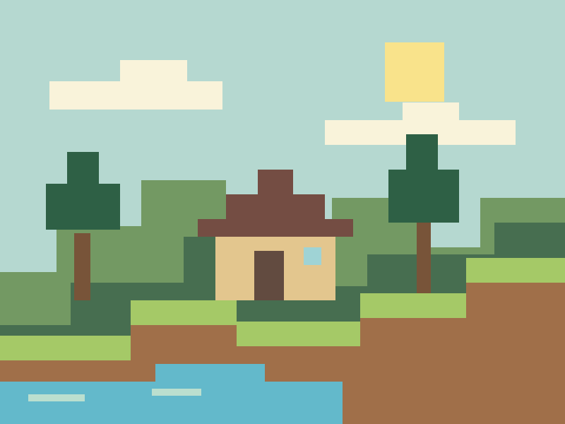
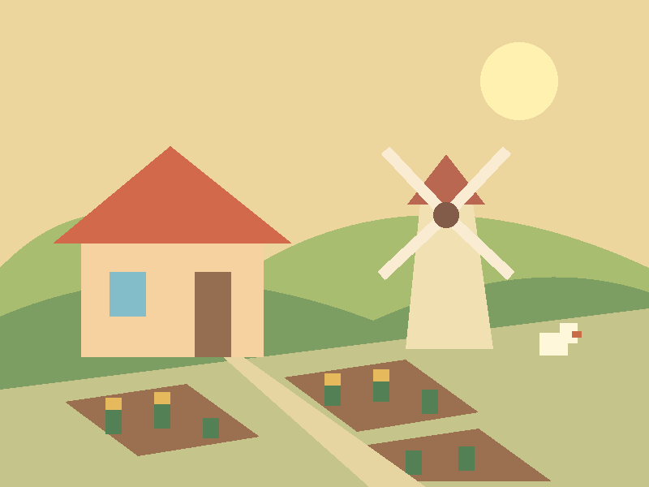
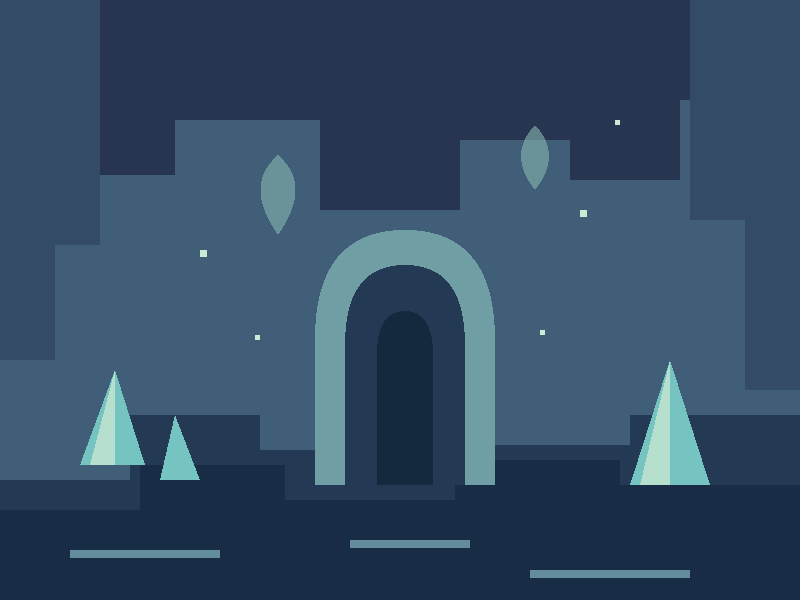

TVŮJ ROZCESTNÍK DO HERNÍCH SVĚTŮ
Jiná nálada.
Jiná hra.
Někdy chceš něco postavit. Jindy vypnout u farmy. A někdy se prostě ztratit v novém světě. Tady najdeš inspiraci pro všechny tři možnosti.


PRESS
PLAY
ILUSTRACE HERNÍCH NÁLAD, NIKOLI SCREENSHOTYPLAY
VYBER SI SVŮJ STYL
Každý svět
má jiné tempo.
Malý výběr tří her.
Bez bodování a bez spoilerů.
01 / TVOŘENÍ
Minecraft
Svět, ve kterém si vlastní cíl můžeš postavit.
02 / POHODAStardew Valley
Nový začátek, malá farma a další herní den.
03 / OBJEVOVÁNÍ
Hollow Knight
Propojené podzemí pro zvědavé průzkumníky.
Všechny tři obrázky jsou vlastní stylizované ilustrace žánrů, vytvořené v SVG s pomocí AI.